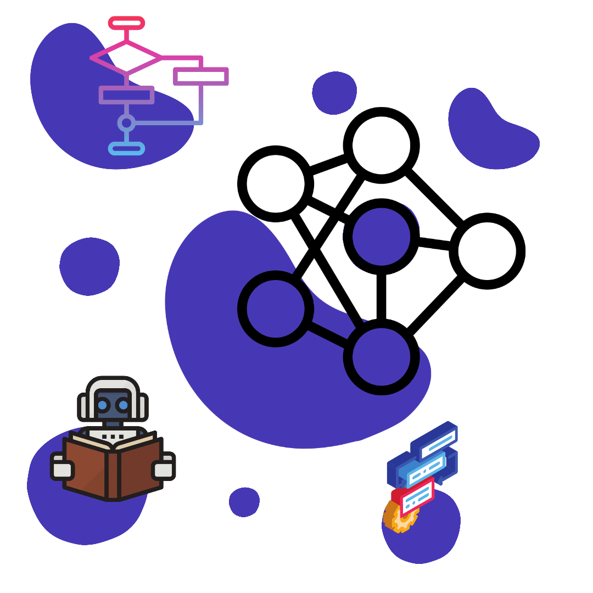

CLOOK Algorithm
CLOOK
C-LOOK is an enhanced version of both SCAN as well as LOOK disk scheduling algorithms. This algorithm also uses the idea of wrapping the tracks as a circular cylinder as C-SCAN algorithm but the seek time is better than C-SCAN algorithm. We know that C-SCAN is used to avoid starvation and services all the requests more uniformly, the same goes for C-LOOK. In this algorithm, the head services requests only in one direction(either left or right) until all the requests in this direction are not serviced and then jumps back to the farthest request on the other direction and service the remaining requests which gives a better uniform servicing as well as avoids wasting seek time for going till the end of the disk.
Algorithm
1.Let Request array represents an array storing indexes of the tracks that have been requested
in ascending order of their time of arrival and head is the position of the disk head.
2.The initial direction in which the head is moving is given and it services in the same
direction.
3.The head services all the requests one by one in the direction it is moving.
4. The head continues to move in the same direction until all the requests in this direction
have been serviced.
5.While moving in this direction, calculate the absolute distance of the tracks from the head.
6.Increment the total seek count with this distance.
7.Currently serviced track position now becomes the new head position.
8.Go to step 5 until we reach the last request in this direction.
9.If we reach the last request in the current direction then reverse the direction and move the
head in this direction until we reach the last request that is needed to be serviced in this
direction without servicing the intermediate requests.
10.Reverse the direction and go to step 3 until all the requests have not been serviced.
